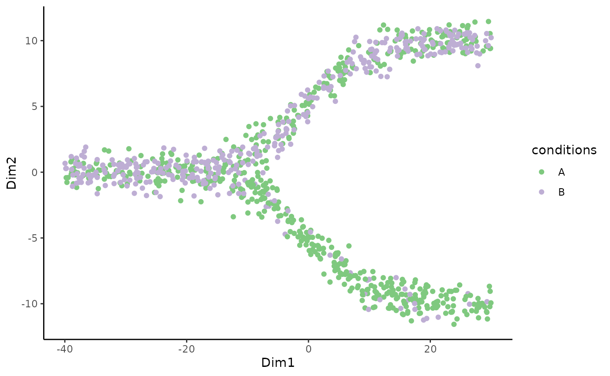
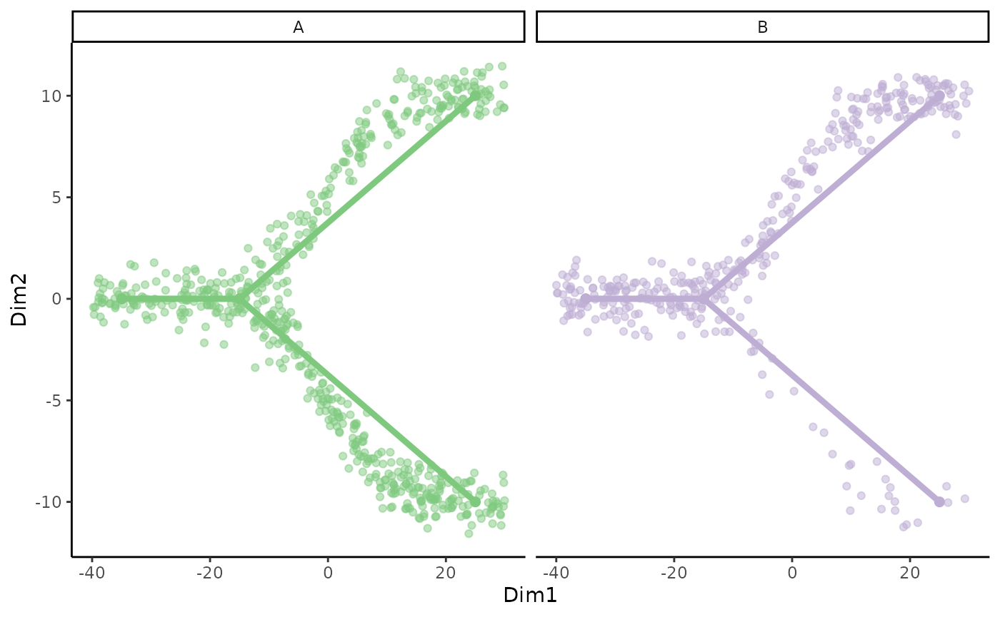
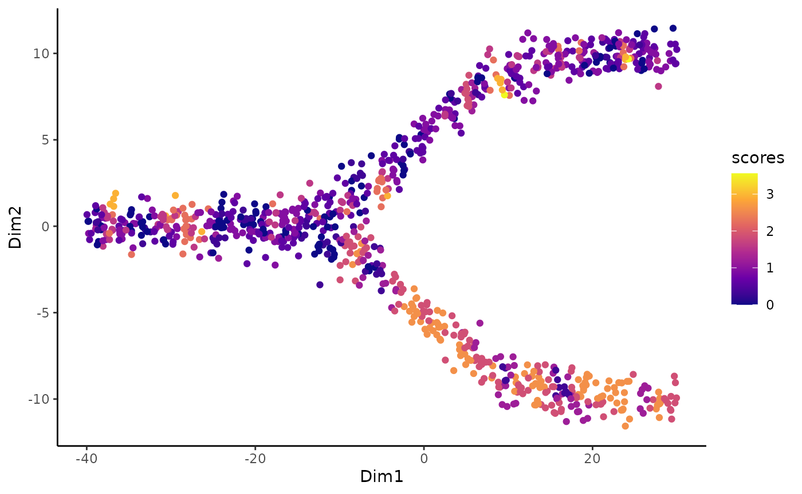
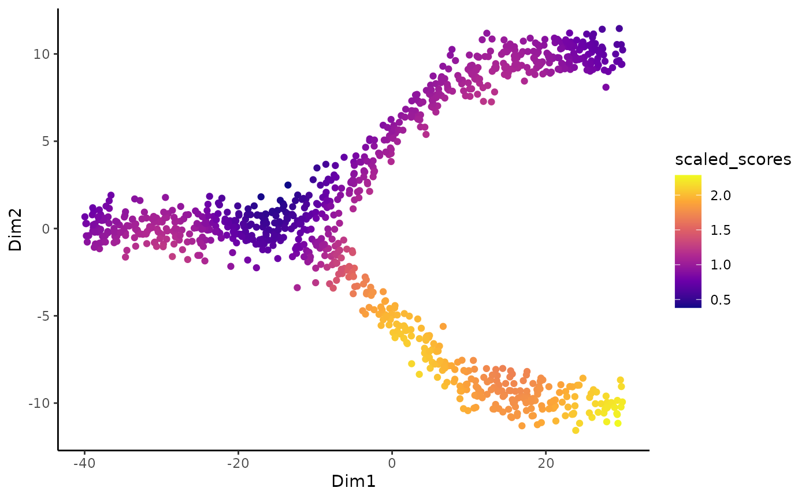
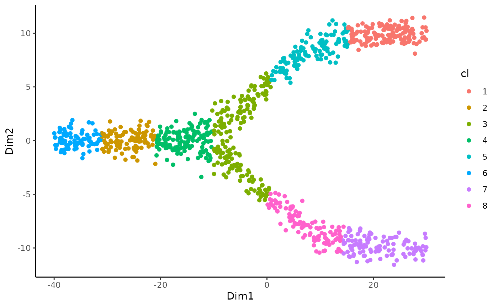
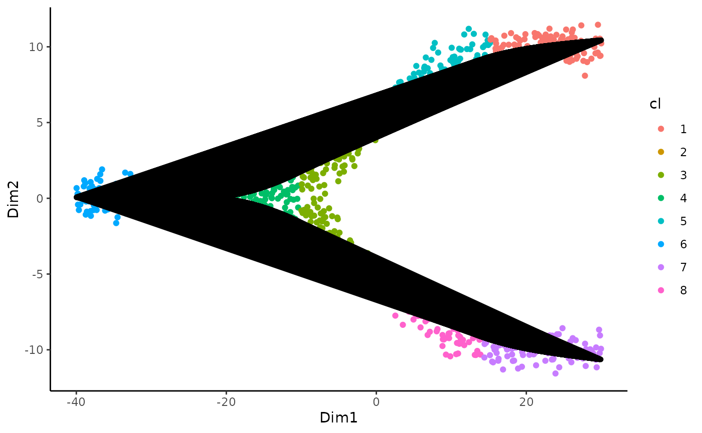
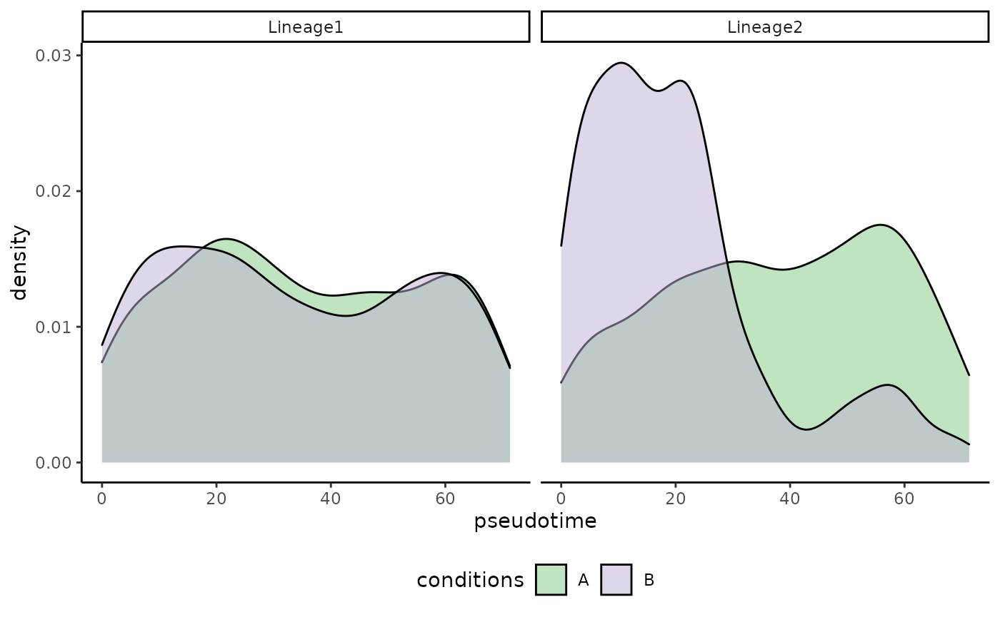
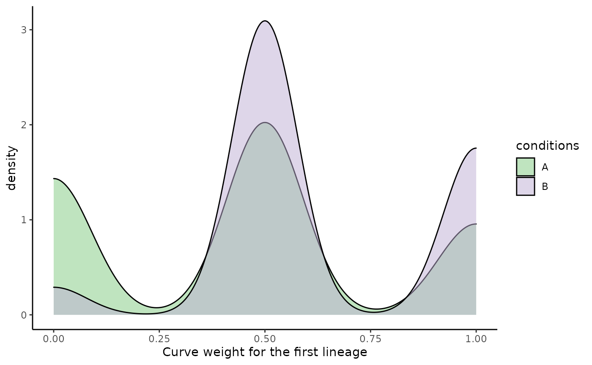

vignettes/condiments.Rmd
condiments.RmdWe will use a synthetic dataset to illustrate the functionalities of the condiments package. We start directly with a dataset where the following steps are assumed to have been run:
# For analysis
library(condiments)
library(slingshot)
# For data manipulation
library(dplyr)
library(tidyr)
# For visualization
library(ggplot2)
library(RColorBrewer)
library(viridis)
set.seed(2071)
theme_set(theme_classic())
data("toy_dataset", package = "condiments")
df <- toy_dataset$sdAs such, we start with a matrix df of metadata for the cells: coordinates in a reduced dimension space (Dim1, Dim2), a vector of conditions assignments conditions (A or B) and a lineage assignment.
We can first plot the cells on the reduced dimensions
p <- ggplot(df, aes(x = Dim1, y = Dim2, col = conditions)) +
geom_point() +
scale_color_brewer(type = "qual")
p
We can also visualize the underlying skeleton structure of the two conditions.
p <- ggplot(df, aes(x = Dim1, y = Dim2, col = conditions)) +
geom_point(alpha = .5) +
geom_point(data = toy_dataset$mst, size = 2) +
geom_path(data = toy_dataset$mst, aes(group = lineages), size = 1.5) +
scale_color_brewer(type = "qual") +
facet_wrap(~conditions) +
guides(col = FALSE)
p
We can then compute the imbalance score of each cell using the imbalance_score function.
scores <- imbalance_score(Object = df %>% select(Dim1, Dim2) %>% as.matrix(),
conditions = df$conditions)
df$scores <- scores$scores
df$scaled_scores <- scores$scaled_scoresThere are two types of scores. The raw score is computed on each cell and looks at the condition distribution of its neighbors compared the the overall distribution. The size of the neighborhood can be set using the k argument, which specify the number of neighbors to consider. Higher values means more local imbalance.
ggplot(df, aes(x = Dim1, y = Dim2, col = scores)) +
geom_point() +
scale_color_viridis_c(option = "C")
The local scores are quite noisy so we can then use local smoothers to smooth the scores of individual cells. The smoothness is dictated by the smooth argument. Those smoothed scores were also computed using the imbalance_score function.
ggplot(df, aes(x = Dim1, y = Dim2, col = scaled_scores)) +
geom_point() +
scale_color_viridis_c(option = "C")
As could be guessed from the original plot, the bottom lineage shows a lot of imbalance while the top one does not. The imbalance score can be used to check: + If the integration has been successful. In general, some regions should be balanced + To identify the regions of imbalance for further analyses.
The first step of our workflow is to decide whether or not to infer the trajectories separately or not. On average, it is better to infer a common trajectory, since a) this allow for a wider range of downstream analyses, and b) more cells are used to estimate the trajectory. However, the condition effect might be strong enough to massively disrupt the differentiation process, which would require fitting separate trajectories.
slingshot(Street et al. 2018) relies on a reduced dimensionality reduction representation of the data, as well as on cluster labels. We can visualize those below:
ggplot(df, aes(x = Dim1, y = Dim2, col = cl)) +
geom_point() The topologyTest assess the quality of the common trajectory inference done by slingshot and test whether we should fit a common or separate trajectory. This test relies on repeated permutations of the conditions followed by trajectory inference so it can take a few seconds.
## Using full covariance matrix
## Takes ~1m30s to run
top_res <- topologyTest(sds = sds, conditions = df$conditions)## Generating permuted trajectories## Running KS-mean test
knitr::kable(top_res)| method | thresh | statistic | p.value |
|---|---|---|---|
| KS_mean | 0.01 | 0 | 1 |
The test clearly fails to reject the null that we can fit a common trajectory so we can continue with the sds object. This will facilitate downstream analysis. For an example of how to proceed if the topologyTest reject the null, we invite the user to refer to relevant case study used in our paper.
We can thus visualize the trajectory
ggplot(df, aes(x = Dim1, y = Dim2, col = cl)) +
geom_point() +
geom_path(data = slingCurves(sds)[[1]]$s[slingCurves(sds)[[1]]$ord, ] %>%
as.data.frame(), col = "black", size = 2) +
geom_path(data = slingCurves(sds)[[2]]$s[slingCurves(sds)[[2]]$ord, ] %>%
as.data.frame(),
col = "black", size = 2) +
NULL
Even though we can fit a common trajectory, it does not mean that the cells will differentiate similarly between the conditions. The first question we can ask is: for a given lineage, are cells equally represented along pseudotime between conditions?
psts <- slingPseudotime(sds) %>%
as.data.frame() %>%
mutate(cells = rownames(.),
conditions = df$conditions) %>%
pivot_longer(starts_with("curve"), values_to = "pseudotime", names_to = "lineages")
ggplot(psts, aes(x = pseudotime, fill = conditions)) +
geom_density(alpha = .5) +
scale_fill_brewer(type = "qual") +
facet_wrap(~lineages) +
theme(legend.position = "bottom")
The pseudotime distributions are identical across conditions for the first lineage but there are clear differences between the two conditions in the second lineage.
To test for differential progression, we use the progressionTest. The test can be run with global = TRUE to test when pooling all lineages, or lineages = TRUE to test every lineage independently, or both. Several tests are implemented in the progressionTest. function. Here, we will use the default, the custom KS test (Smirnov 1939).
prog_res <- progressionTest(sds, conditions = df$conditions, global = TRUE, lineages = TRUE)
knitr::kable(prog_res)| lineage | statistic | p.value |
|---|---|---|
| All | 5.5068236 | 0.0000000 |
| 1 | 0.0344087 | 0.9940214 |
| 2 | 0.4699368 | 0.0000000 |
As expected, there is a global difference over all lineages, which is driven by differences of distribution across lineage 2 (i.e. the bottom one).
Even though we can fit a common trajectory, it does not mean that the cells will differentiate similarly between the conditions. The first question we can ask is: for a given lineage, are cells equally between the two lineages for the two conditions?
Visualizing differences 2D distributions can be somewhat tricky. However, it is important to note that the sum of all lineage weights should sum to 1. As such, we can only plot the weights for the first lineage.
df$weight_1 <- slingCurveWeights(sds, as.probs = TRUE)[, 1]
ggplot(df, aes(x = weight_1, fill = conditions)) +
geom_density(alpha = .5) +
scale_fill_brewer(type = "qual") +
labs(x = "Curve weight for the first lineage")
The distribution has tri modes, which is very often the case for two lineages: + A weight around 0 represent a cell that is mostly assigned to the other lineage (i.e. lineage 2 here) + A weight around .5 represent a cell that is equally assigned to both lineages, i.e. before the bifurcation. + A weight around 1 represent a cell that is mostly assigned to this lineage (i.e. lineage 1 here)
In condition A, we have many more cells with a weight of 0 and, since those are density plots, fewer cells with weights around .5 and 1. Visually, we can guess that cells in condition B differentiate preferentially along lineage 1.
To test for differential differentiation, we use the differentiationTest. The test can be run with global = TRUE to test when pooling all pairs of lineages, or pairwise = TRUE to test every pair independently, or both. Here, there is only one pair so the options are equivalent. Several tests are implemented in the differentiationTest. function. Here, we will use the default, the classifier test(Lopez-Paz and Oquab 2016).
set.seed(12)
dif_res <- differentiationTest(sds, conditions = df$conditions, global = FALSE, pairwise = TRUE)## note: only 1 unique complexity parameters in default grid. Truncating the grid to 1 .## Loading required package: lattice## note: only 1 unique complexity parameters in default grid. Truncating the grid to 1 .
knitr::kable(dif_res)| pair | statistic | p.value |
|---|---|---|
| 1vs2 | 0.6476577 | 5.6e-06 |
As could be guessed from the plot, we have clear differential differentiation.
The workflow above focus on global differences, looking at broad patterns of differentiation. While this is a necessary first step, gene-level information is also quite meaningful.
To do so requires tradeSeq(Van den Berge et al. 2020) > 1.3.0. Considering that we have a count matrix counts, the basic workflow is:s
library(tradeSeq)
sce <- fitGAM(counts = counts, sds = sds, conditions = df$conditions)
cond_genes <- conditionTest(sds)For more details on fitting the smoothers, we refer users to the tradeSeq website and to the accompanying Bioconductor workshop.
For both of the above procedures, it is important to note that we are making multiple comparisons (in this case, 5). The p-values we obtain from these tests should be corrected for multiple testing, especially for trajectories with a large number of lineages.
That said, trajectory inference is often one of the last computational methods in a very long analysis pipeline (generally including gene-level quantification, gene filtering / feature selection, and dimensionality reduction). Hence, we strongly discourage the reader from putting too much faith in any p-value that comes out of this analysis. Such values may be useful suggestions, indicating particular features or cells for follow-up study, but should generally not be treated as meaningful statistical quantities.
## R version 4.0.3 (2020-10-10)
## Platform: x86_64-pc-linux-gnu (64-bit)
## Running under: Ubuntu 20.04.1 LTS
##
## Matrix products: default
## BLAS/LAPACK: /usr/lib/x86_64-linux-gnu/openblas-pthread/libopenblasp-r0.3.8.so
##
## locale:
## [1] LC_CTYPE=en_US.UTF-8 LC_NUMERIC=C
## [3] LC_TIME=en_US.UTF-8 LC_COLLATE=en_US.UTF-8
## [5] LC_MONETARY=en_US.UTF-8 LC_MESSAGES=C
## [7] LC_PAPER=en_US.UTF-8 LC_NAME=C
## [9] LC_ADDRESS=C LC_TELEPHONE=C
## [11] LC_MEASUREMENT=en_US.UTF-8 LC_IDENTIFICATION=C
##
## attached base packages:
## [1] stats graphics grDevices utils datasets methods base
##
## other attached packages:
## [1] caret_6.0-86 lattice_0.20-41 viridis_0.5.1 viridisLite_0.3.0
## [5] RColorBrewer_1.1-2 ggplot2_3.3.3 tidyr_1.1.3 dplyr_1.0.5
## [9] slingshot_1.8.0 princurve_2.1.6 condiments_0.8.0 knitr_1.31
##
## loaded via a namespace (and not attached):
## [1] colorspace_2.0-0 deldir_0.2-10
## [3] ellipsis_0.3.1 class_7.3-17
## [5] rprojroot_2.0.2 XVector_0.30.0
## [7] GenomicRanges_1.42.0 fs_1.5.0
## [9] spatstat.data_2.0-0 farver_2.1.0
## [11] prodlim_2019.11.13 lubridate_1.7.10
## [13] codetools_0.2-18 splines_4.0.3
## [15] polyclip_1.10-0 pROC_1.17.0.1
## [17] kernlab_0.9-29 compiler_4.0.3
## [19] Matrix_1.3-0 htmltools_0.5.0
## [21] tools_4.0.3 igraph_1.2.6
## [23] gtable_0.3.0 glue_1.4.2
## [25] GenomeInfoDbData_1.2.4 RANN_2.6.1
## [27] reshape2_1.4.4 Rcpp_1.0.5
## [29] spatstat_1.64-1 Biobase_2.50.0
## [31] pkgdown_1.6.1 vctrs_0.3.6
## [33] ape_5.4-1 nlme_3.1-151
## [35] iterators_1.0.13 timeDate_3043.102
## [37] gower_0.2.2 xfun_0.19
## [39] stringr_1.4.0 Ecume_0.9.0
## [41] lifecycle_1.0.0 goftest_1.2-2
## [43] zlibbioc_1.36.0 MASS_7.3-53
## [45] scales_1.1.1 ipred_0.9-10
## [47] ragg_1.1.1 MatrixGenerics_1.2.1
## [49] spatstat.utils_2.0-0 parallel_4.0.3
## [51] SummarizedExperiment_1.20.0 SingleCellExperiment_1.12.0
## [53] yaml_2.2.1 memoise_1.1.0
## [55] pbapply_1.4-3 gridExtra_2.3
## [57] rpart_4.1-15 stringi_1.5.3
## [59] highr_0.8 S4Vectors_0.28.1
## [61] desc_1.3.0 randomForest_4.6-14
## [63] foreach_1.5.1 e1071_1.7-4
## [65] BiocGenerics_0.36.0 BiocParallel_1.24.1
## [67] lava_1.6.8.1 GenomeInfoDb_1.26.2
## [69] rlang_0.4.10 pkgconfig_2.0.3
## [71] systemfonts_1.0.1 matrixStats_0.58.0
## [73] bitops_1.0-6 evaluate_0.14
## [75] purrr_0.3.4 tensor_1.5
## [77] recipes_0.1.15 labeling_0.4.2
## [79] transport_0.12-2 tidyselect_1.1.0
## [81] plyr_1.8.6 magrittr_2.0.1
## [83] R6_2.5.0 IRanges_2.24.1
## [85] generics_0.1.0 DelayedArray_0.16.2
## [87] pillar_1.4.7 withr_2.3.0
## [89] mgcv_1.8-33 survival_3.2-7
## [91] abind_1.4-5 RCurl_1.98-1.2
## [93] nnet_7.3-14 tibble_3.0.4
## [95] crayon_1.4.1 rmarkdown_2.7
## [97] grid_4.0.3 data.table_1.14.0
## [99] ModelMetrics_1.2.2.2 digest_0.6.27
## [101] textshaping_0.3.1 stats4_4.0.3
## [103] munsell_0.5.0Lopez-Paz, David, and Maxime Oquab. 2016. “Revisiting Classifier Two-Sample Tests.” Arxiv, October, 1–15. http://arxiv.org/abs/1610.06545.
Smirnov, Nikolai V. 1939. “On the Estimation of the Discrepancy Between Empirical Curves of Distribution for Two Independent Samples.” Bull. Math. Univ. Moscou 2 (2): 3–14.
Street, Kelly, Davide Risso, Russell B. Fletcher, Diya Das, John Ngai, Nir Yosef, Elizabeth Purdom, and Sandrine Dudoit. 2018. “Slingshot: cell lineage and pseudotime inference for single-cell transcriptomics.” BMC Genomics 19 (1): 477. https://doi.org/10.1186/s12864-018-4772-0.
Van den Berge, Koen, Hector Roux de Bézieux, Kelly Street, Wouter Saelens, Robrecht Cannoodt, Yvan Saeys, Sandrine Dudoit, and Lieven Clement. 2020. “Trajectory-based differential expression analysis for single-cell sequencing data.” Nature Communications 11 (1): 1201. https://doi.org/10.1038/s41467-020-14766-3.